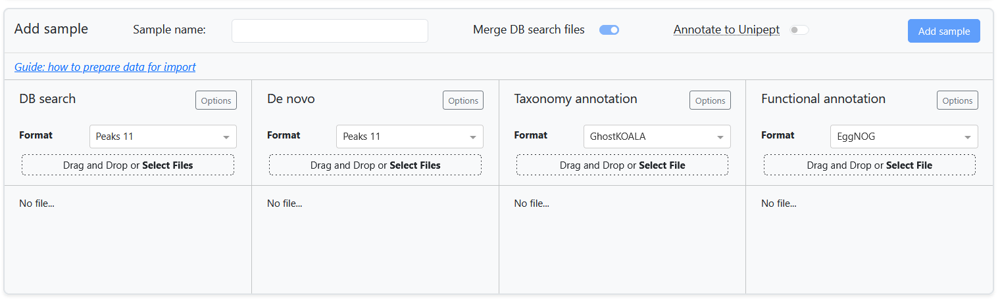

Sample data import
A project consists of two datasets: A spectral dataset from a single experiment run (the Performance evaluation dataset), and a metaproteomics dataset with taxonomy and functional annotations of multiple samples (the Compositions and functions dataset). The Performance evaluation dataset consists of spectral data (mzML), feature data (featureXML), and metaproteomics data (peptide sequences from DB search and de novo identification). Due to the size of the spectral data, only one experimental sample may be stored inside the spectral dataset.
The Compositions and functions dataset consists of a dataset of multiple samples, where each sample contains metaproteomics data (peptide sequences from DB search and de novo identification), as well as taxonomy and functional information for each peptide. Generally, a "sample" relates to the input sample (metaproteome) used for MS analysis and it may contain peptide data from multiple MS runs (in case of replicates or fractions).
To extend an existing project or start a new one, new samples can be imported into the meta-PepView dashboard. This is done in the Create project page. Here, new samples are added from the importer module:

For each data component, meta-PepView supports input formats from various sources. The Prepare input data section contains a detailed overview of the input formats that is expected by meta-PepView.
This page highlights considerations for importing and combining multiple input sources into samples to import into the project. It gives an overview of all the import components, as well as instructions how to combine the sources into a new sample to import.
Import components
DB search
Metaproteomics data from DB search matching of mass spectrometry data is imported in the DB search field. This field expects a dataset of peptide sequence identified scans (one row corresponds to a single spectrum match). Meta-PepView supports several DB search output formats:
More information about the expected input format can be found here.
DB search data is a component of both the Performance evaluation dataset and Compositions and functions dataset. When importing DB search data into the Performance evaluation dataset, only a single file may be uploaded and no additional settings are provided outside of the DB search format.
When importing DB search data into a new sample for the Compositions and functions dataset, several options are provided: Either a single DB search file may be uploaded, or multiple files may be supplied. If merge DB search files is toggled on, all files are merged and processed as a single sample. If it is toggled off, each DB search file will be processed as a separate sample.
In the Options menu (only present for Compositions and functions dataset import), a match confidence cutoff may be specified (format depends on DB search format). In addition, a protein ID pattern may be specified to extract from the protein ID fields and make it compatible with Protein ID report formats from other sources. Finally, a pre-filtering of peptide sequences may be performed based on presence in the cRAP database.
De novo
Metaproteomics data from de novo peptide identification of DDA mass spectometry data is imported in the De novo field. Similarly to DB search import, this field expects a dataset of peptide sequence identified scans (one row corresponds to a single spectrum identification). Meta-PepView supports several de novo output formats:
More information about the expected input format can be found here.
de novo data is a component of both the Performance evaluation dataset and Compositions and functions dataset. When importing de novo data into the Performance evaluation dataset, only a single file may be uploaded and no additional settings are provided outside of the de novo format.
When importing de novo data into a new sample for the Compositions and functions dataset, several options are provided: Either a single de novo file may be uploaded, or multiple files may be supplied. If merge DB search files is toggled on, all de novo files will be used to supplement the sample dataset together with all DB search data. They will be merged and processed as a single sample. If merge DB search files is toggled off, then each de novo file will be matched to a DB search file, based on shared raw file names (originating from the same MS run), and processed separately with the DB search data to form a separate sample for each DB search file. De novo files that do not match to any DB search dataset are not processed.
Info
In most input formats, a single DB search or de novo file may contain multiple raw file sources. For example, the database search engine used for spectrum matching may combine multiple sample fractions in a single DB search file. The same is true for de novo data. In meta-PepView, if DB search files are not merged (each file is a separate sample), supplementing de novo data to each DB search file sample is done by matching raw file sources with loose criteria. This means that when one shared raw file source is found between a DB search file and a de novo file, they are matched. As a result, one DB search file may be matched to multiple de novo files if it contains multiple raw file sources.
In the Options menu (only present for Compositions and functions dataset import), a identification confidence cutoff may be specified (format depends on de novo format). Also, a pre-filtering of peptide sequences may be performed based on presence in the cRAP database.
Warning
Setting an appropriate confidence cutoff is essential for de novo identification data, but not trivial. One challenge is that there is no reliable strategy for false discovery rate estimation. Also, only a small fraction of mass spectrometry scans contain the full information to identify a full peptide sequence. However, most de novo identification engines will attempt to resolve a peptide sequence from incomplete spectral profiles, resulting in a large fraction of incorrect sequences.
Spectral file
The Spectral file field is an import component for the Performance evaluation dataset and allows import of spectral data in mzML format into the dashboard. Either a single mzML file may be imported, or a compressed archive (zip or tar.gz archive) of a single mzML file may be imported. Due to the often large size of the file, it is recommended to compress it prior to import.
More information on how to generate valid mzML files is provided here.
Note
Meta-PepView performs validation checks to confirm that the spectral data and metaproteomics data were generated from the same experiment. However, due to inconsistencies in reporting of the mass spectometry run between input files, validation of the run is performed based on the name of the raw spectral file (file name without the extension). Since some metaproteomics files only report the name of the mzML file used as input, it is strongly recommended to ensure that the mzML file has the same name as the raw spectral file used as input for mzML generation (this is often the default behavior during mzML generation). Otherwise, meta-PepView may falsely invalidate combinations of spectral and metaproteomics datasets.
Features
The Features field is an import component for the Performance evaluation dataset and allows import of feature data in featureXML format. The featureXML file contains a feature map dataset generated from the mzML spectral data. The feature map contains all features in an MS run. A feature is a 2D description of a peak that represents a single compound measured in the MS run. Features are generated by clustering spectral signals that are expected to belong to the same compound (due to isotope peaks or repeated measurements during the elution range). Inclusion of feature information allows further evaluation of the chromatographic profile of the MS experiment, as well as evaluation of contamination/noise.
Meta-PepView supports import of a single featureXML file, or a compressed archive (zip or tar.gz archive) of a single featureXML file. More information on how to generate featureXML files is provided here.
Taxonomy annotation
The Taxonomy annotation field is an import component for the Compositions and functions dataset and is used for supplementing taxonomic information to the peptides provided in the metaproteomics import data. The main source for taxonomic annotation is from a user supplied accession-taxonomy mapping file (often referred to as local annotation). Meta-PepView supports import of GhostKOALA format output data (for expected format, see here), or a user generated accession-taxonomy map file.
For user generated taxonomy files, they should contain an accession column, which may be protein IDs linked to peptide sequences from the DB search dataset or peptide sequences directly. These accessions are mapped with a taxonomy ID, which should be stored in a separate column. Meta-PepView supports annotation of NCBI or GTDB format taxonomies. Since the dataset matches protein IDs to taxonomy, this source will only annotate DB search data. More information about the expected format of the protein-taxonomy map is found here.
Meta-PepView provides an extensive menu with options how it should parse the accession-taxonomy map dataset:

- Delimiter: The user may set the expected delimiter for the tabular data format.
- Accession type: Specify if accessions are protein IDs, or peptide sequence. (Meta-PepView will automatically parse the correct data from the DB search dataasets.)
- Accession parser: Specify how the accession values, either as complete string or by extracting a substring. It should only be used for protein ID accessions. This can be used to match the accession (protein ID) format to those reported in DB search data.
- Pattern match (regex): Set a regex pattern to match a pattern group of the accession column (Only if Accession parser is set to "Custom regex").
- Accession/Taxonomy column index: Set column indices (starting at 0) for accession and taxonomy values.
- Taxonomy element format: Specify if the taxonomy column contains taxonomy IDs or taxonomy names.
- To NCBI taxonomy ID (genome IDs only): (GTDB ONLY) For a dataset of genome IDs present in the GTDB database, convert genomes to a NCBI taxonomy ID, then process data with NCBI taxonomy format.
Meta-PepView can collect taxonomy information by querying the peptide sequences directly to Unipept (is enabled by the Annotate peptides to Unipept switch at the top of the sample import box). This allows taxonomy annotation of both DB search data and de novo data, and does not require any additional dataset to be imported. In Unipept, peptide sequences are matched against the UniprotKB protein database, and taxonomy information is collected from matching proteins. Meta-PepView requests the Last Common Ancestor for each peptide sequence.
The taxonomy information fetched from Unipept is stored separately from the local annotated taxonomy information. Therefore, both strategies may be performed simultaneously for a single sample. This is useful when the local taxonomy map is validated in the Evaluate community composition module. It may also be used to supplement the local taxonomy annotation data in the Community composition module.
Note
Unipept only supports taxonomy annotation in NCBI format, it cannot be used as an extra taxonomy annotation strategy for GTDB format taxonomy.
Warning
It is not recommended to convert GTDB taxonomy to NCBI format. The conversion may result in a loss of taxonomy information, may decrease the resolution of the taxonomy annotation, and in the worst case, cause inaccurate taxonomy classifications. Use this only if the sample needs to be in NCBI format and there is no other way to obtain NCBI format taxonomy annotations.
Functional annotation
The Functional annotation field is an import component for the Compositions and functions dataset and is used for supplementing protein functional information to the peptides provided in the metaproteomics input data (only DB search). Meta-PepView supports processing and visualization of functional information in KEGG orthology format. Meta-PepView supports import of functional annotation data from two sources:
More information about expected format of functional annotation data can be found here.
Both tools perform functional annotation of proteins based on a protein sequence database provided as fasta. Therefore, functional information is mapped to protein IDs, which have to be matched to the protein IDs linked to the peptide sequences inside the DB search files. At the moment, functional annotation is only possible for DB search matched peptide data.
For both datasets, only the KEGG Orthology (KO) identifier is of interest for the meta-PepView dashboard. However, EggNOG provides annotations for proteins from several databases (Pfam, COG, gene ontology, etc.). These are preserved when exporting the project table in CSV format and can thus be analyzed manually.
Note
GhostKOALA and EggNOG both use their own databases to functionally annotate proteins. As a result, proteins might be differently annotated depending on what tool is being used. If a particularly complex sample is being analyzed, it might be worthwhile to experiment with both tools to observe the effect on the output.
Options for configuration of functional annotation data is limited. Similarly to DB search and taxonomy import, a protein ID pattern may be specified to extract from the protein ID fields in the functional annotation dataset to make it compatible with Protein ID report formats from DB search data.
In addition, there is the option, Combine multiple annotations, that may be checked. When this option is checked, it will combine functional annotations for peptides that have multiple protein matches: For each field it will get all variants and concatenate them into a new value. When unchecked, it will discard functional annotations of peptides if a conflict is found.
Import experiment into performance evaluation dataset
Import of an experiment into the performance evaluation dataset is straightforward. A spectral dataset (mzML) is required to import an experiment, while the other components (features, DB search, de novo) are optional. However, the full experiment performance evaluation module will only be visualized when all components are supplied. After all input sources are imported into the dashboard, the experiment data can be processed and incorporated into the project by pressing Add sample.
Importing a reference dataset of multiple experiments
The experiment performance evaluation module includes cross-experiment comparison and benchmarking of experiments by import of a experiment reference dataset. This is a dataset that contains performance metrics for a large set of experiments. Some pre-generated datasets are included into the module for quick testing, but custom reference datasets for import into the module may be created using the mpv-buildref tool.
Import samples into compositions and functions dataset
 IMPORTANT: Consider the input format constraints
IMPORTANT: Consider the input format constraints
When combining multiple samples into a single sample table, meta-PepView is strict in managing import formats that is allowed. When data is imported into an existing project, meta-PepView performs the following checks if a sample is compatible for import:
- All samples should be compatible in taxonomy and function characterization. Thus, a project can only contain samples with either NCBI or GTDB format taxonomies, not both.
- For each data component, all samples in a project must come from the same data format (e.g. Sage, Novor, GhostKOALA). The output of a sample may differ significantly based on the used input source, to ensure consistency across samples, meta-PepView allows no mixing of input sources. The input formats that the project follows and allows for new data can be seen on the top bar of the Create project page.
Input data components
A sample consists of the following import components:
- DB search metaproteomics datasets
- De novo metaproteomics datasets
- A taxonomy annotation dataset (and/or taxonomy annotation by sequence matching in Unipept)
- A functional annotation dataset
Import multiple DB search/de novo files at once
For DB search and de novo metaproteomics input data, multiple files may be selected for import. However, only one taxonomy annotation and functional annotation file may be imported per sample. When multiple DB search or de novo metaproteomics files are selected, meta-PepView will either merge the datasets into a single sample, or generate a separate sample for each DB search file. This option is specified in the merge DB search files toggle. Merging multiple DB search and de novo files allows for easily combining fractions or replicates from a single experimental sample.
Allowed combinations of input data components
Meta-PepView allows flexible inclusion or omission of input data, it will process all data supplied by the user and ignore processing tasks if a required data source is absent. However, a new sample should contain at least two import components:
- One metaproteomics dataset (peptides from DB search or de novo identification).
- One annotation source (taxonomy annotation or functional annotation).
Some import components may be omitted if no data is present. However, this may limit the visualization tools that are available for the sample. In general, the input data configuration depends on the presence or absence of DB search input data.
Import sample with DB search input
When one (or multiple) DB search input datasets are provided, a sample may be imported if at least one of the taxonomy annotation or functional annotation source is provided. The taxonomy annotation source may be a local accession to taxonomy dataset, annotation of peptide sequences by Unipept, or both. One or multiple de novo datasets may be supplemented to the sample.
Import sample without DB search input
With only de novo metaproteomics input data in a sample, meta-PepView can still perform taxonomy analysis on the sample. To import a sample with only de novo data, simply check the checkbox Annotate peptides to Unipept. Meta-PepView can currently only perform taxonomy annotation of peptides by sequence matching in Unipept. No local taxonomy annotation file or functional annotation dataset can be added.
Import multiple samples at once
Meta-PepView allows import of a collection of metaproteomics experiments at once. This is done by loading multiple DB search datasets into the DB search field and unchecking the merge DB search files toggle. Note that this requires all DB search files to be compatible with the same taxonomy and functional database. In addition, sample names are automatically named after the DB search file names. Thus, these should be named accordingly. This option may be useful for time series analysis or separate import of replicates.
When de novo metaproteomics data is included together with DB search data. Meta-PepView will internally match each de novo dataset with the corresponding DB search dataset through their common spectral raw file names. This ensures that they belong to the same mass spectrometry analysis. De novo files that do not match to any DB search dataset are ignored.
Note
Matching de novo metaproteomics data to DB search data can get complicated when single DB search data files or de novo data files contain multiple raw source files (multiple MS runs merged into one file). Currently, meta-PepView will merge all de novo files that share at least one raw source file with the DB search file. Though, this may result in redundancy where one de novo peptide identification may be added to multiple samples.